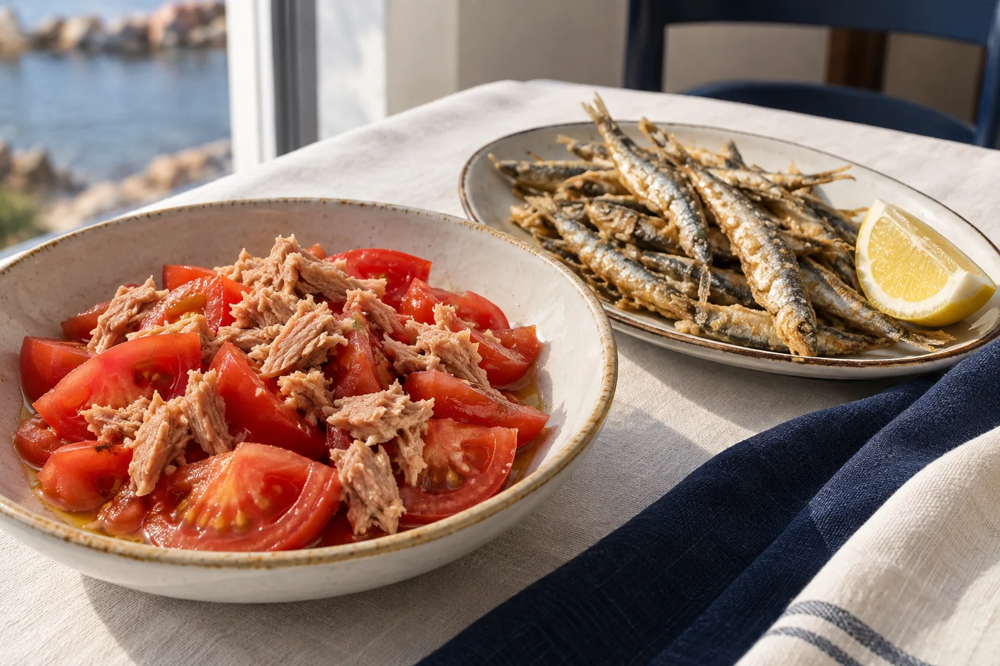
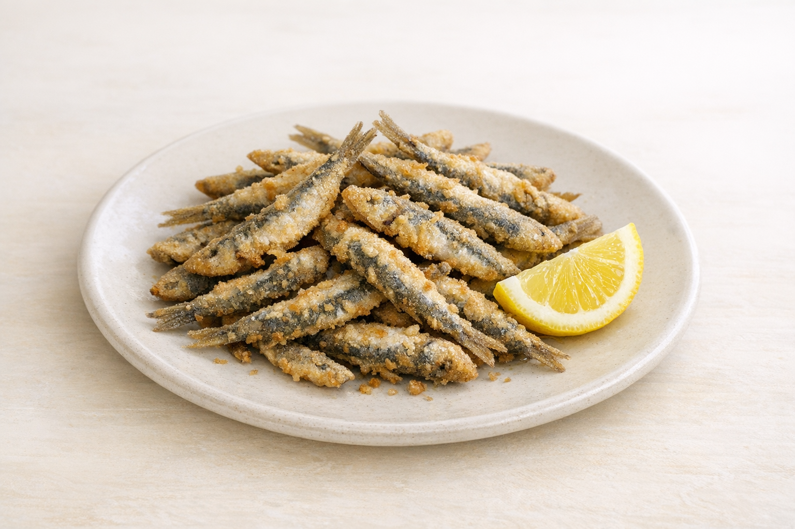

01
Entrantes
Ensalada mixta
8.00 €Ensaladilla rusa
13.00 €Salpicón de marisco
13.00 €Ensalada de pimientos asados
12.00 €Tomate con atún
15.00 €Ensalada con frutos secos
14.00 €Abanico de aguacate con langostinos
16.00 €Gazpacho
6.00 €Boquerones en vinagre
13.00 €Tomate con anchoas
16.00 €
02
Pescaito frito
Boquerones
13.00 €Boquerones al limón
14.00 €Calamares
16.50 €Calamaritos
17.50 €Chanquetes plata
13.00 €Adobo de rosada
14.50 €Rosada ali-oli
16.00 €Fritura malagueña
24.00 €